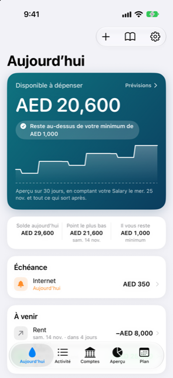

Guide › Commencez ici
Une journée avec Damla
Ce qu’il faut regarder sur Aujourd’hui, et les petites habitudes qui gardent la réponse juste.
Aujourd’hui est l’écran que Damla vous montre chaque jour : une grande réponse en haut - ce qui est disponible à dépenser - et, en dessous, tout ce qui attend de vous. Cette page est l’habitude quotidienne.

Quand l’utiliser
- Le matin, pour voir à quoi ressemble la journée avant que quoi que ce soit ne quitte votre compte.
- Quand quelque chose arrive à échéance, pour l’enregistrer en une touche depuis la liste Échéance.
- Quand un message de banque est arrivé ailleurs que prévu, pour le retrouver en attente de votre OK.
- Quand vous voulez savoir où est passé l’argent ce mois-ci.
Étape par étape
- Ouvrez Aujourd’hui. La grande carte affiche Disponible à dépenser et un verdict : soit elle indique que le solde reste au-dessus de votre minimum sur la période, soit elle dit Vous risquez d’être à découvert avant une date. Touchez la carte pour ouvrir les Prévisions et voir, jour par jour, où se trouve le point bas.
- Regardez les trois chiffres sous la carte : Solde aujourd’hui, le Point le plus bas de la période avec sa date, et Il vous reste, votre minimum.
- Sous les chiffres, tout ce qui demande une réponse apparaît sous forme de ligne, dans cet ordre :
- Échéance (revenus et factures dus demain, aujourd’hui ou déjà en retard, pas encore enregistrés). - Des relevés à examiner (envoyés via Shortcuts, rien n’est ajouté tant que vous ne confirmez pas). - Des éléments en attente de votre OK (la boîte de réception). - Des factures trouvées dans votre historique (paiements répétés que Damla a repérés ; ajoutez-les en une touche). - Des factures à venir (annoncées par un message mais pas encore débitées ; prises en compte une fois la carte débitée). - Terminer la configuration (étapes que vous avez laissées pour plus tard). - Un rappel de sauvegarde, quand la sauvegarde automatique n’a pas tourné depuis quelques jours, ou est désactivée alors que vos livres ont déjà des entrées.
- Touchez la ligne qui demande votre attention. Un paiement dû ouvre sa page pour l’enregistrer ; une facture de carte ouvre Payer la facture de carte (montant, compte, date) ; un achat mis de côté ouvre son plan. Les alertes assez claires pour être enregistrées vont directement dans la liste Activité, sous Nouveau depuis les alertes.
- Parcourez À venir en dessous : entrées et sorties d’argent réunies, chacune avec sa date, et des lignes tactiles qui mènent directement à l’endroit où c’est enregistré. Si l’un de vos comptes bancaires a un montant Garder au moins et passerait sous ce seuil avant la fin du mois, une ligne Déplacer … vers … apparaît avec le montant à déplacer - touchez-la pour voir le détail du calcul.
- Lisez la ligne Où est passé l’argent pour savoir combien vous avez dépensé ce mois-ci, et Demander à Damla si vous avez une question sur quelque chose que vous prévoyez de faire.
Si vous voyez Vous risquez d’être à découvert, cela signifie que le point le plus bas de votre solde sur la période passe sous votre minimum avant la fin de celle-ci. Les Prévisions montrent quand. Et si ? (un bouton dans les Prévisions) vous laisse essayer de dépenser, de recevoir, de sauter un paiement ou de transformer quelque chose en mensualités avant de le faire pour de vrai.
Bon à savoir
Les petites habitudes qui gardent la réponse juste :
- Enregistrez les choses quand elles arrivent - Saisir une phrase dans le menu Ajouter, ou laissez vos messages de banque arriver à Damla via Shortcuts pour que cela se fasse tout seul.
- Ouvrez la boîte de réception et videz ce qui attend votre OK, plutôt que de le laisser en attente.
- Quand quelque chose se répète et n’est pas encore une facture, ajoutez-le depuis la ligne des factures trouvées dans votre historique pour que les prévisions en tiennent compte.
- Videz le rappel de sauvegarde : tout vit sur le téléphone, donc la sauvegarde est votre copie.
- Quand la réponse annonce un manque, regardez tôt : ouvrez les Prévisions.
Voir aussi
Quelque chose n’est pas clair ou manque ? Écrivez à support@raveniq.ai en indiquant la page.